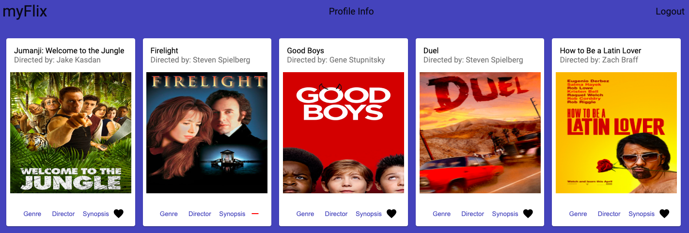
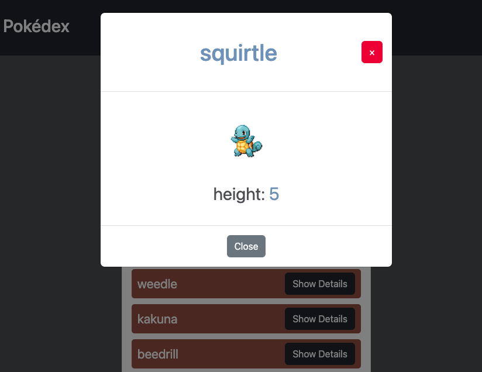
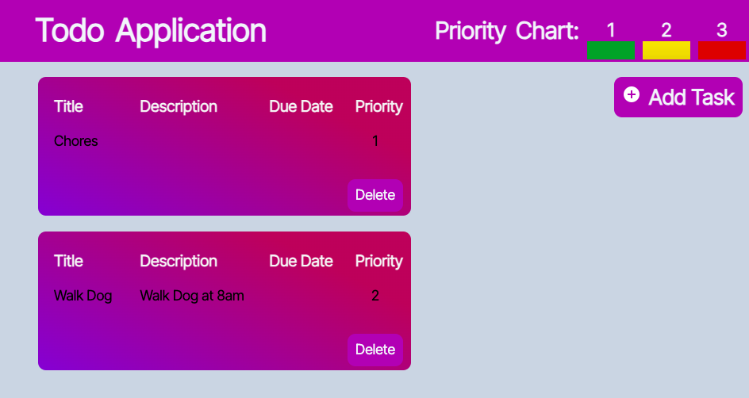
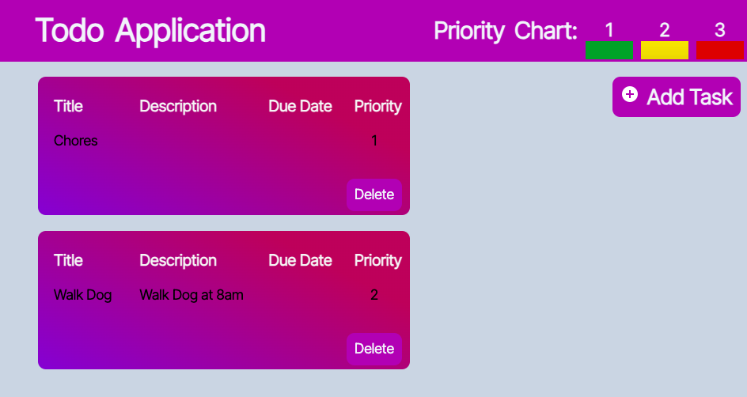

My Projects
myFlix App
This project involved building the client-side portion for an app called myFlix. My role for this project was to build the user interface for myFlix. This entailed implementing different features, such as creating a login and signup page with user authentication and interacting with myFlix’s API to implement CRUD functionality based on a user’s movie choices. While completing this project, I learned about data storage and validation, the benefits of using a framework as opposed to vanilla Javascript for building and maintaining web applications, communicating with an API using a framework, the importance of modularizing code, authorization and authentication, how to build a SPA, and a better understanding of the request-response cycle.

Technologies used:
ReactJS, React Bootstrap, Parcel.
Meet App
The objective of the Meet app was to build a serverless, progressive web application (PWA) with React using a test-driven development (TDD) approach. The application uses the Google Calendar API to fetch upcoming events in various cities. Meet contains several features, from filtering events by city to using the application while offline. Please refer to the README file on github for more details of each feature for the Meet app.

Technologies used:
React, React Testing Libaray, Jest, Puppeteer, AWS Lambda, git, Recharts, Google Calender API.
Chat App
ChatApp is a mobile app, built with React Native, where you can talk to friends, send and take photos, and send your location. Choice your background color and even view messages while offline!

Technologies used:
React Native, Expo (cross platform development), Firebase for data storage and authentication (annoymous), Gifted Chat for implementing common chat functionalites.
MyFlix Angular
The objective of myFlix Angular was to build the client-side portion for an app called myFlix using the Angular framework. MyFlix Angular includes the ability to sign up and login with user authentication, updating user infomation, and the ability to view and select different movies.
Technologies used:
Angular, Angular Material, Angular CLI.
Pokedex App
The objective of the Meet app was to build a serverless, progressive web application (PWA) with React using a test-driven development (TDD) approach. The application uses the Google Calendar API to fetch upcoming events in various cities.
Technologies used:
HTML, CSS, Javascript, Pokémon API.
MyFlix API
This project involved creating a REST API that interacts with a nosql database that stores data about movies and users. My role for this project was building the backend of an app called myFlix. I built a REST API and a database using Node, Express, and MongoDB. During this project, I learned how to create a web server, important concepts of RESTful architecture, why authorization and authentication is very important and how to implement them, backend data validation and taking security measures to keep user data safe and private.

Technologies used:
Express, Node, MongoDB, bycrpt library, passport library, JSON Web Token.
A Dashboard and SignUp Form
Both of the following are completely for design purposes.
Technologies used:
HTML, CSS
Tic-Tac-Toe and A Todo list
Making the tic-tac-toe game was quite fun and the purpose of the todo list app was practice implementing CRUD functionalit.
 

Technologies used:
HTML, CSS, Javascript
Rennovations
I made this responsive website for a client's rennovation business.

Technologies used:
HTML, CSS, Javascript